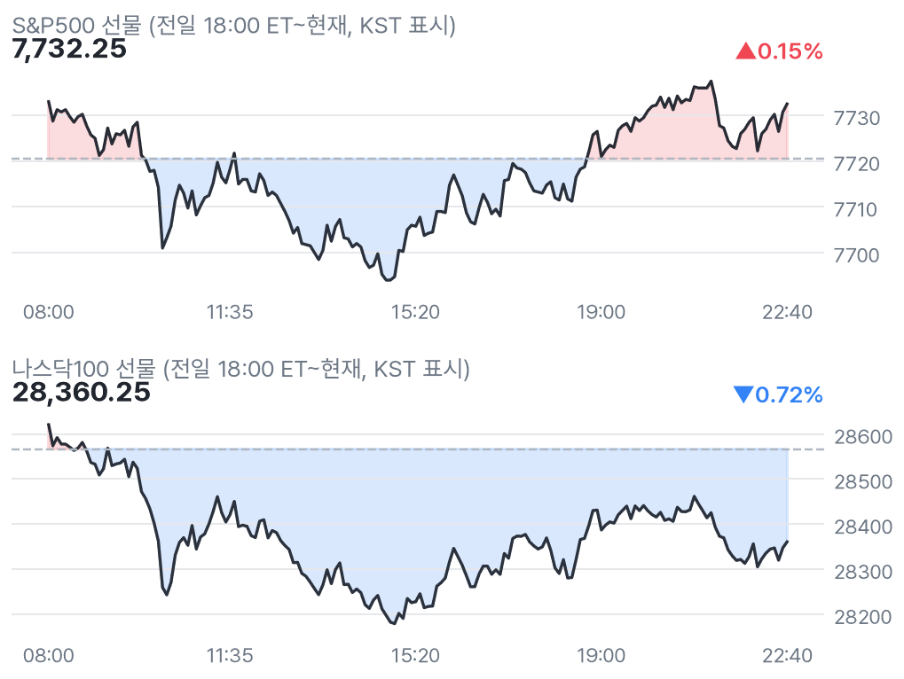
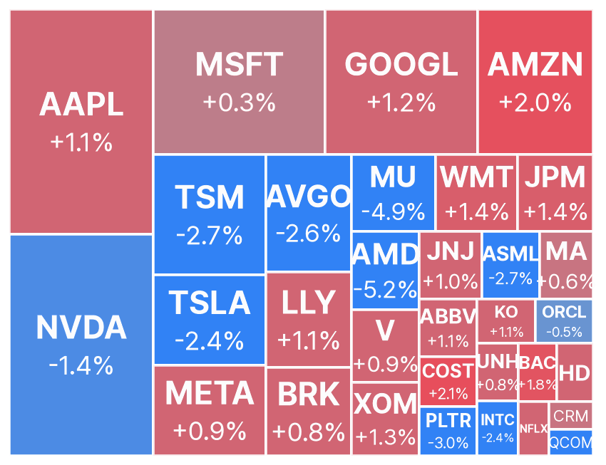
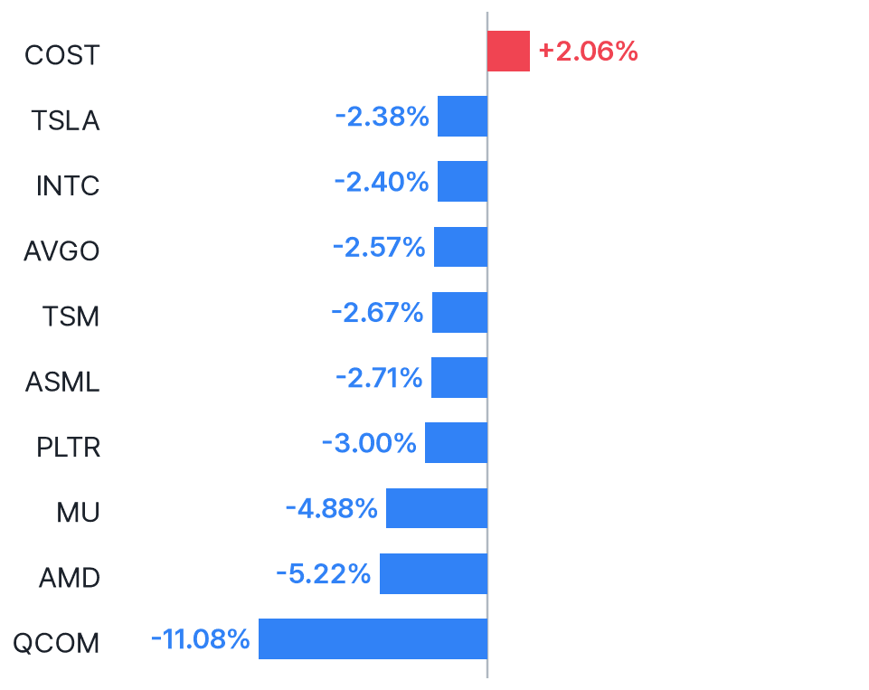
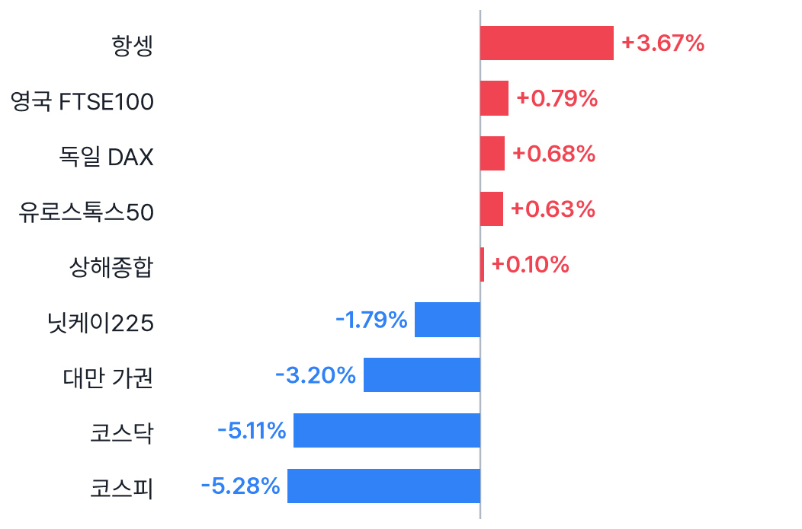
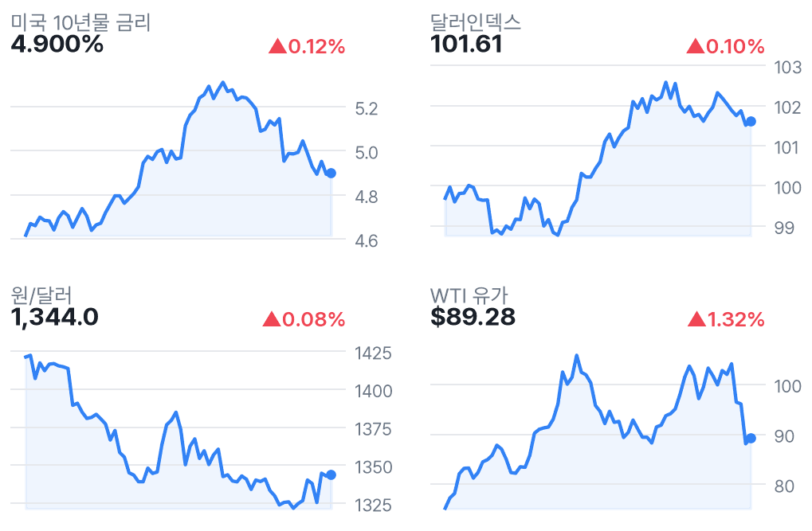

나스닥 선물 0.72%↓, 반도체 약세·다우 강세
✅ 핵심 요약
- 나스닥100 선물 -0.72%·다우 +0.73%: 반도체와 비기술주 차별화
- 퀄컴 -11.08%·AMD -5.22%: 퀄컴 매출 압박 보도 속 반도체 약세
- 22:30 신규 실업수당 예상 19.7만건; 실제치는 확인되지 않아 서프라이즈 판단 보류
- JP모건 +1.39%·엑손모빌 +1.29%; 코스피 -5.28% 뒤 미국 반도체 흐름 점검
📊 주요 지표
S&P500 선물
7,732.25
▲0.15%
나스닥100 선물
28,360.25
▼0.72%
다우 선물
53,895
▲0.73%
러셀 선물
2,874.40
▲0.30%
VIX
16.85
▲1.44%
미국 10년물
4.900%
▲0.12%
달러인덱스
101.61
▲0.10%
원/달러
1,344.0
▲0.08%
WTI
$89.28
▲1.32%
금
$4,130
▲1.40%
비트코인
$79,746
▼0.82%
유로스톡스50
6,305.26
▲0.63%
🧭 시장 해석
나스닥100 선물은 0.72% 내린 반면 다우는 0.73% 상승했다. 퀄컴 매출 압박을 다룬 MarketWatch 보도와 함께 반도체 약세가 두드러진다. 금융·에너지의 상대 강세를 보면 전면 위험회피보다는 업종 차별화로 읽히지만, 이는 시세에 근거한 해석이다.
코스피가 5.28% 급락한 뒤 미국 반도체의 낙폭 축소 여부가 국내장 확인 지점이다. 신규 실업수당은 예상 19.7만건만 확인됐고 실제치는 검증하지 못했다. 따라서 고용지표가 선물 움직임의 원인이라고 단정하지 않는다.
반도체 약세, 모든 기술주 약세는 아님
퀄컴 -11.08%, AMD -5.22%, 마이크론 -4.88%, 엔비디아 -1.40%로 반도체가 약하다. 반면 아마존 +1.95%, 알파벳 +1.23%, 애플 +1.13%다. 기술주 전체보다 반도체에 매도 압력이 집중된 모습이라는 해석이다. 퀄컴의 구체적인 매출 압박 요인은 기사 본문 확인이 제한돼 단정하지 않는다.
AI 인프라의 정책·자원 제약 점검
CNBC는 OpenAI의 새 데이터센터 정책 제안과 중국 문샷의 유럽 경유 블랙웰 접근 추진을 보도했다. AI 인프라의 전력·지역사회 수용성과 첨단칩 수출통제를 점검할 뉴스다. 다만 이 뉴스가 오늘 반도체 하락을 직접 유발했다고 확인된 것은 아니다.
📈 차트
미국 지수 선물 야간 흐름

점선 = 전일 정산가
빅테크·대형주 프리마켓 히트맵

전일 종가 대비 프리마켓 현재가 · 타일 크기 = 시가총액
프리마켓 변동 상위 10 (대형주)

변동폭 절대값 기준
유럽(장중) · 아시아(마감) 증시

현지 기준 전일 대비
금리·달러·원화·유가 (3개월)

우측 상단 = 전일 대비
🏦 애널리스트 · 리서치
- AMD — UBS 목표가 $730→$700 하향, Buy 유지매수 의견은 유지하되 목표가를 낮췄다는 의견. 투자의견 하향과 목표가 하향은 구분할 필요.
- XOM — Citigroup 목표가 $155→$175 상향, Neutral 유지중립 의견을 유지하면서 목표가만 높였다는 의견. 투자의견 상향은 아님.
미국 대형주 의견·목표가 변경 2건 (Yahoo)
- 목표가 하향AMD · UBSBuy · 목표가 $730 → $700 · 11/05 07:46 KST
- 목표가 상향XOM · CitigroupNeutral · 목표가 $155 → $175 · 11/05 06:16 KST
📰 주요 뉴스
-
퀄컴 급락과 반도체 투자심리 점검MarketWatch
-
AI 인프라의 전력비·지역사회 수용성 쟁점CNBC
-
첨단 AI칩 수출통제와 해외 수요의 접점CNBC
미국·글로벌 헤드라인 18건
-
MarketWatch · 11/05 22:47
-
CNBC · 11/05 22:45
-
CNBC · 11/05 22:44
-
CNBC · 11/05 22:44
-
CNBC · 11/05 22:34
-
Investopedia · 11/05 22:30
-
CNBC · 11/05 22:26
-
CNBC · 11/05 22:25
-
CNBC Markets · 11/05 22:22
-
CNBC · 11/05 22:17
-
MarketWatch · 11/05 22:15
-
Investor's Business Daily · 11/05 22:13
-
Yahoo Finance · 11/05 22:10
-
MarketWatch · 11/05 22:07
-
MarketWatch · 11/05 22:01
-
CNBC · 11/05 22:00
-
CNBC · 11/05 21:57
-
Trefis · 11/05 21:53
애널리스트 관련 헤드라인 12건
-
Benzinga · 11/05 22:29
-
Benzinga · 11/05 22:22
-
Benzinga · 11/05 22:10
-
Benzinga · 11/05 21:34
-
Benzinga · 11/05 21:28
-
Benzinga · 11/05 21:19
-
Benzinga · 11/05 21:16
-
Benzinga · 11/05 21:02
-
TradingView · 11/05 20:54
-
Benzinga · 11/05 20:50
-
The Globe and Mail · 11/05 20:25
-
Benzinga · 11/05 20:17
국내 헤드라인 8건
-
중앙일보 · 11/05 22:38
-
톱스타뉴스 · 11/05 21:38
-
코인리더스 · 11/05 20:39
-
더퍼블릭 · 11/05 17:27
-
https://www.standingout.kr/ · 11/05 17:17
-
PANews · 11/05 16:33
-
중기이코노미 · 11/05 15:36
-
네이버 프리미엄콘텐츠 · 11/05 15:06
🗓️ 일정
경제지표·이벤트 (KST)
- 22:30🇺🇸 미국 Unemployment Claims11/05 · 중요도 중간 · 예상 197K · 이전 194K
오늘 미국 실적 발표 (장전=발표 완료 · 장후=새벽)
- COP ConocoPhillips장전시총 $173.5B · EPS 예상 $3.06 · 시간외 ▲1.83%
- SONY Sony Group Corporation장전시총 $149.7B · EPS 예상 $0.38 · 시간외 ▲6.36%
- MNST Monster Beverage Corporation장후시총 $138.6B · EPS 예상 $0.30
- PH Parker-Hannifin Corporation장전시총 $119.2B · EPS 예상 $8.23 · 시간외 ▲6.35%
- CNQ Canadian Natural Resources Limited장전시총 $110.7B · EPS 예상 $1.05 · 시간외 ▲1.41%
- SO Southern Company (The)장전시총 $107.8B · EPS 예상 $1.71 · 시간외 ▲1.26%
- ABNB Airbnb, Inc.장후시총 $100.0B · EPS 예상 $2.86
- DUK Duke Energy Corporation장전시총 $98.6B · EPS 예상 $1.87 · 시간외 ▲1.47%
- NET Cloudflare, Inc.장후시총 $97.4B · EPS 예상 $0.02
- EOG EOG Resources, Inc.장후시총 $81.4B · EPS 예상 $4.45
- CI The Cigna Group장전시총 $78.1B · EPS 예상 $7.46 · 시간외 ▲2.81%
- SPG Simon Property Group, Inc.장후시총 $71.9B · EPS 예상 $3.32
- APD Air Products and Chemicals, Inc.장전시총 $69.7B · EPS 예상 $3.60 · 시간외 ▼0.27%
- CMI Cummins Inc.장전시총 $68.9B · EPS 예상 $8.38
👀 체크포인트
- 22:30 발표 일정신규 실업수당 예상 19.7만건·이전 19.4만건; 실제치 미확인
- 23:30미국장 개장: 퀄컴·AMD 낙폭과 다우·나스닥 차별화 지속 여부
- 내일 새벽장후 Airbnb·Cloudflare·Monster Beverage 실적 예정